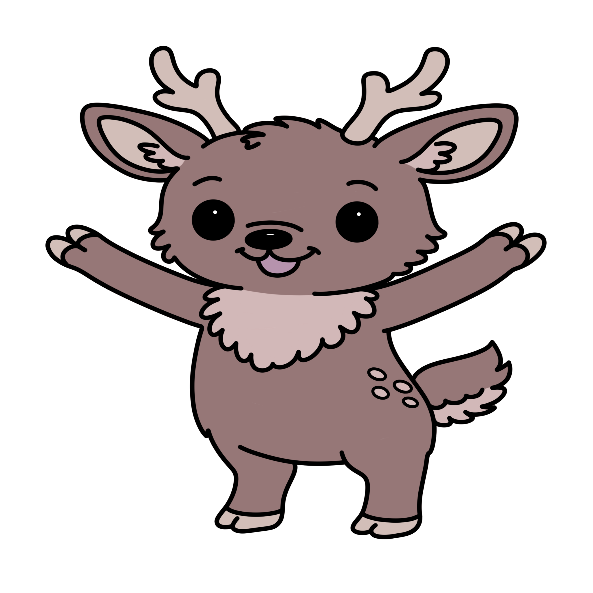

Shy and soft-spoken, Dimple prefers to stay just behind the others, watching carefully before stepping forward. She's gentle, thoughtful, and brave in quiet ways. Her kindness shows through small gestures rather than big words.
Dimple loves picking wildflowers to make beautiful little bouquets.
Sweet Baby Carrots